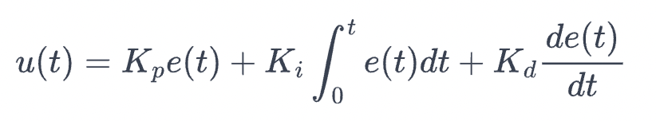

Introduction
The purpose of this lab is to utilize PID control to manage the angular movement of the robot, enabling it to move and stop precisely at predefined angles. By experimenting with different PID parameter values, we aim to observe the varying effects on the robot's motion. Our objective is to determine the optimal PID settings that allow the robot to achieve the desired movement and stopping behavior with accuracy and stability.
Parts required
- 1 x SparkFun RedBoard Artemis Nano
- 1 x USB C-to-C cable
- 1 x 9DOF IMU sensor
- 2 x 4m ToF sensor
- 1 x QWICC Breakout board
- 2 x QWICC connector
- 1 x JST2 connector+cable
- 1 x Force1 RC car
- 1 x Li-ion 3.7v 850mAh battery
- 2 x Dual motor drivers
PID Control
Background
PID control stands for Proportional-Integral-Derivative control, a widely used feedback control technique in engineering systems. It aims to maintain a desired output by adjusting control inputs based on the difference (error) between the desired setpoint and the actual output. A PID controller combines three distinct components:
- Proportional (P) Control: This component produces an output that is proportional to the current error. The proportional gain (Kp) determines the responsiveness of the controller. Higher Kp values result in larger adjustments for a given error, leading to quicker responses but potentially causing overshoot and instability.
- Integral (I) Control: The integral component addresses accumulated past errors by integrating the error over time. The integral gain (Ki) influences how strongly past errors affect the current output. This helps eliminate steady-state errors but can introduce lag and potential oscillations if not properly tuned.
- Derivative (D) Control: This component predicts future errors based on the rate of change of the error. The derivative gain (Ki) affects the damping response, helping to reduce overshoot and oscillations by anticipating changes in the error. However, excessive Ki can make the system overly sensitive to noise.
The combined PID control equation is given by:
PID controllers are versatile and can be tuned to achieve a wide range of performance characteristics, making them suitable for various applications, from simple temperature control to complex industrial automation systems.
Heuristics
There are multiple ways to tune a PID controller, and I chose one of the heuristic methods. First, I adjusted the proportional term to ensure the motor moves in the correct direction to reduce the error between the current position and the setpoint. This resulted in fast movement but caused significant overshooting and oscillations. Next, I kept the integral term constant and gradually increased the derivative term until the robot stopped overshooting, though this introduced a substantial steady-state error. Finally, I stopped adjusting the derivative term and increased the integral term until the steady-state error was eliminated.
Depending on the robot's design, we can either increase the proportional term to make the robot reach its goal faster, with a higher likelihood of overshooting, or increase the derivative term to slow the robot down, reducing the probability of overshooting. I opted for the latter, ensuring the robot is less likely to overshoot.
Range of PID values
Before tuning the PID coefficients, it is critical to understand the effective ranges for each coefficient. We began with the proportional term. Given that the IMU sensor measures angle between 0 and 360 degrees, and the maximum PWM value is 255, the proportional term's effective range is between 0 and 1. This ensures that the control effort (PWM) is scaled appropriately to the sensor's input range.
Next, we considered the integral term. Since the sum of the error accumulates over time, it is typically at least 10 times larger than the instantaneous error. Therefore, we set the range for the integral coefficient between 0 and 0.1. This prevents the integral action from accumulating too rapidly, which could lead to excessive overshooting and instability.
Finally, for the derivative term, we noted that the rate of change of the error (the derivative) is generally much smaller than the error itself, often about 10 times smaller. Consequently, we set the derivative coefficient's range between 0 and 10. This allows the derivative action to provide adequate damping to counteract rapid changes in error without causing excessive sluggishness in the system's response.
By establishing these ranges, we ensured that our PID tuning process was both effective and efficient, providing a solid foundation for achieving optimal control performance.
LOG Data
To verify that the PID calculations are correct and that the robot's behavior aligns with expectations, I logged all relevant data. This data was stored in a structured array, allowing for efficient organization and retrieval. By doing so, I ensured that I could transmit this information via Bluetooth Low Energy (BLE). This approach enabled real-time monitoring and analysis of the robot's performance, facilitating prompt adjustments and fine-tuning of the PID parameters to achieve the desired control outcomes.
struct debugData{ int timestamp; int setpoint; float distance; float error; float error_sum; float error_de; float d_old; float motor_control; int motor_speed; }; int const arraysize = 1000; debugData data[arraysize]; int d_index = 0; void store_ori_data() { data[array_index].timestamp = millis(); data[array_index].setpoint = setangle; data[array_index].distance = yaw; data[array_index].error = a_difference; data[array_index].error_sum = a_d_sum; data[array_index].error_de = a_d_derivative; data[array_index].d_old = a_d_old; data[array_index].motor_control = a_motor_control; data[array_index].motor_speed = a_motor_speed; }
I wrote a command GET_ARRAY that sends the data to the python script
case GET_ARRAY: // Extract the next value from the command string as an integer for(int i = 0;i<arraysize;i++){ tx_estring_value.clear(); tx_estring_value.append(" timestamp: "); tx_estring_value.append(data[i].timestamp); tx_estring_value.append(" distance: "); tx_estring_value.append(data[i].distance); tx_estring_value.append(" error: "); tx_estring_value.append(data[i].error); tx_estring_value.append(" error_sum: "); tx_estring_value.append(data[i].error_sum); tx_estring_value.append(" d_old: "); tx_estring_value.append(data[i].d_old); tx_estring_value.append(" error_deri: "); tx_estring_value.append(data[i].error_de); tx_estring_value.append(" motor_speed: "); tx_estring_value.append(data[i].motor_speed); tx_characteristic_string.writeValue(tx_estring_value.c_str()); Serial.print("Sent back: "); Serial.println(tx_estring_value.c_str()); } break;
IMU drift
As we learned in Lab 2, yaw rotation can only be calculated by integrating the gyroscope data. The major drawback of this approach is that it leads to significant drift over time, which is detrimental to accurate orientation control. To address this issue, I implemented the Digital Motion Processor (DMP) available on our IMU board. The DMP offers ultra-low power run-time and performs background calibration of the accelerometer, gyroscope, and compass. This calibration ensures that the sensor data remains accurate and reliable, both for physical measurements and for virtual sensors generated through sensor fusion. Essentially, the DMP corrects errors and reduces drift by fusing readings from the ICM's 3-axis gyroscope, 3-axis accelerometer, and 3-axis magnetometer/compass. This fusion process significantly improves the performance and stability of orientation control in our system.
The code below illustrates how the DSP is enabled and used in my robot.
icm_20948_DMP_data_t data;
myICM.readDMPdataFromFIFO(&data);
if ((myICM.status == ICM_20948_Stat_Ok) || (myICM.status == ICM_20948_Stat_FIFOMoreDataAvail)) // check if data is avaliable
{
if ((data.header & DMP_header_bitmap_Quat6) > 0) // Check for Quat6 orientation data
{
// Q0 value is computed from this equation: Q0^2 + Q1^2 + Q2^2 + Q3^2 = 1.
// In case of drift, the sum will not add to 1, therefore, quaternion data need to be corrected with right bias values.
// The quaternion data is scaled by 2^30.
// Scale to +/- 1
double q1 = ((double)data.Quat6.Data.Q1) / 1073741824.0; // Convert to double. Divide by 2^30
double q2 = ((double)data.Quat6.Data.Q2) / 1073741824.0; // Convert to double. Divide by 2^30
double q3 = ((double)data.Quat6.Data.Q3) / 1073741824.0; // Convert to double. Divide by 2^30
// Convert the quaternions to Euler angles (roll, pitch, yaw)
// https://en.wikipedia.org/w/index.php?title=Conversion_between_quaternions_and_Euler_angles§ion=8#Source_code_2
double q0 = sqrt(1.0 - ((q1 * q1) + (q2 * q2) + (q3 * q3)));
double q2sqr = q2 * q2;
// roll (x-axis rotation)
double t0 = +2.0 * (q0 * q1 + q2 * q3);
double t1 = +1.0 - 2.0 * (q1 * q1 + q2sqr);
double roll = atan2(t0, t1) * 180.0 / PI;
// pitch (y-axis rotation)
double t2 = +2.0 * (q0 * q2 - q3 * q1);
t2 = t2 > 1.0 ? 1.0 : t2;
t2 = t2 < -1.0 ? -1.0 : t2;
double pitch = asin(t2) * 180.0 / PI;
yaw (z-axis rotation)
double t3 = +2.0 * (q0 * q3 + q1 * q2);
double t4 = +1.0 - 2.0 * (q2sqr + q3 * q3);
yaw = - (atan2(t3, t4) * 180.0 / PI);
Serial.print("roll:");
Serial.print(roll);
Serial.print(",");
Serial.print("pitch:");
Serial.print(pitch);
Serial.print(",");
Serial.print("yaw:");
Serial.print(yaw);
Serial.println();
}
}
}
Implementation
Proportional term
The proportional term in the PID controller is straightforward to calculate. It involves determining the error, which is the difference between the measured distance from the Time-of-Flight (ToF) sensor and the setpoint. One important consideration is that the DMP returns the yaw value in a range from 0 to 180 degrees and then from -180 degrees to -1 degrees. This means that if the robot rotates 270 degrees clockwise, the DMP will report a yaw value of -90 degrees. To ensure consistency in the data scale, I adjusted the error calculation by adding 360 degrees whenever the value is smaller than -180 degrees. This adjustment transforms the error range to 0 to 360 degrees for clockwise rotation, providing a uniform scale for all rotational measurements. The proportional term is then obtained by multiplying this error by the proportional coefficient (Kp).
Derivative term
To calculate the derivative of the error, we apply the formula for the derivative, which involves finding the rate of change of the error over time. This is done by taking the difference between the current error and the previous error, and then dividing by the time interval between these two measurements. Since the time interval between two measurements are very similar, we ignored this term. If we choose to increase this term, we just needs to increase the derivative coefficient (kd) more and nothing else will change. sThe derivative term is obtained by multiplying this rate of change by the derivative coefficient (Kd).
Additionally, since the Artemis microcontroller operates faster than the ToF sensor, it often reads the same measurement multiple times before new data is available from the sensor. This can cause the calculated derivative of the error to incorrectly appear as zero when no new measurements are received. To address this, we update the derivative of the error only when there is a non-zero difference between the current and previous errors. If the error remains the same, we keep the derivative of the error unchanged.
I tried to low pass the derivative term, but it does not show substantial improvement of controlling the robot. Consequently, we decided to abandon this approach and explore alternative strategies for optimizing the PID controller's tuning and operation.
Integral term
The integral term is obtained by adding up all errors over time. The optimal behavior for this term to increase in value for as long as the error is positive, to remain constant when the error is zero (i.e. we are staying at the desired position), and to decrease when the error is negative (i.e. we've overshot the desired position). However, a challenge arises when the system cannot precisely reach the desired position due to factors like mechanical limitations or external disturbances. In such cases, the integral term continues to accumulate, potentially leading to overshooting or instability as it attempts to compensate for the persistent error. Moreover, if the system remains stationary while the PID controller is active, such as when holding a robot in position, the integral term continues to increase unabated. This scenario, known as integrator windup, can adversely affect the system's behavior when the robot is released, causing it to exhibit undesired movements or oscillations due to the accumulated integral action.
The simplest solution to solve the integrator windup is to clamp this term at some maximum value.
These are the conditions under which we prevent the integrator from accumulating any more value:
- The controller output is saturated. In other words, when the pwm value is 255
- The sign of the controller output is the same as the sign of the error (i.e. the integrator is making the situation worse).
As soon as the error switches sign, we unclamp the integrator term so that it immediately starts to decrease, limiting overshoot. I choose to clamp the integral term at 3000 and -3000.
To sum up, only when the motor_speed is not 255 or -255 and the motor_speed and error has the same sign, I chose to increase the integral term.
Intermediate control value
To enhance motor control and provide more detailed PID tuning, I introduced an intermediate control value called motor_control. This value represents the sum of all three terms in the PID controller and is constrained to a range between -200 and 200. To account for the deadband of the motor, which is set at 180 pwm value in my system, I implemented a linear mapping of motor_control to motor_speed. For motor_speed, which ranges from -255 to 255, I mapped motor_control in such a way that values below 0 are mapped to speeds between -255 and -180, while values above 0 are mapped to speeds between 180 and 255. This mapping ensures that the motor responds smoothly to changes in the control signal, with gradual adjustments around the deadband to prevent abrupt changes in motor speed.
This code snippet below is the complete Implementation of the function A_PID() which is called repeatedly every loop after the function sensor_IMU() that updates the IMU data.
void A_PID() { a_difference = yaw - setangle; if(a_difference<-180){ a_difference = a_difference + 360; } if( (a_motor_speed!=255) && (a_motor_speed!=-255) && ((a_motor_speed>=0 && a_difference>=0) || (a_motor_speed<=0 && a_difference<=0))){ a_d_sum += a_difference; if(a_d_sum > 3000) a_d_sum = 3000; else if(a_d_sum < -3000) a_d_sum = -3000; } if(a_difference - a_d_old != 0 && array_index != 0){ a_d_derivative = float(a_difference - a_d_old); } a_d_old = a_difference; a_motor_control = a_difference * a_proportion + a_d_derivative * a_derivative; + a_d_sum * a_integral; if(a_motor_control > 200) a_motor_control = 200; else if(a_motor_control < -200) a_motor_control = -200; if(a_motor_control >= 0){ a_motor_speed = a_motor_control / 200 * (75) + 180; } else { a_motor_speed = a_motor_control / 200 * (75) - 180; } if(a_difference<=1.5 && a_difference>=-1.5){ a_motor_speed = 0; } if(a_motor_speed >= 0){ analogWrite(leftforward,0); analogWrite(rightforward,int(a_motor_speed*0.9)); analogWrite(leftbackward,a_motor_speed); analogWrite(rightbackward,0); } else{ analogWrite(leftforward,(-a_motor_speed)); analogWrite(rightforward,0); analogWrite(leftbackward,0); analogWrite(rightbackward,int(-a_motor_speed*0.9)); } }
After several trials, we found this combination of PID works really well:
- Kp = 2.5
- Ki = 0.02
- Kp = 6